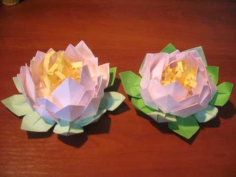
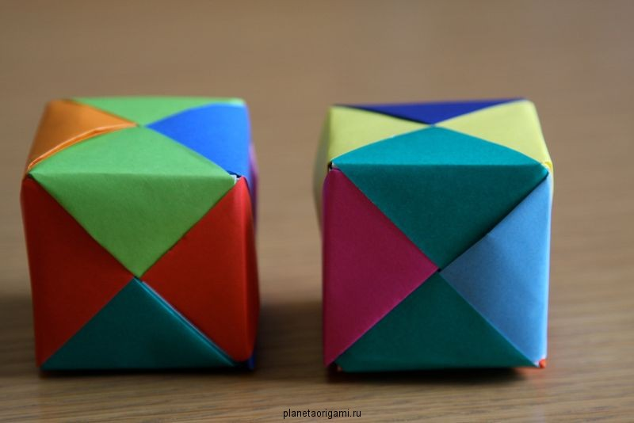
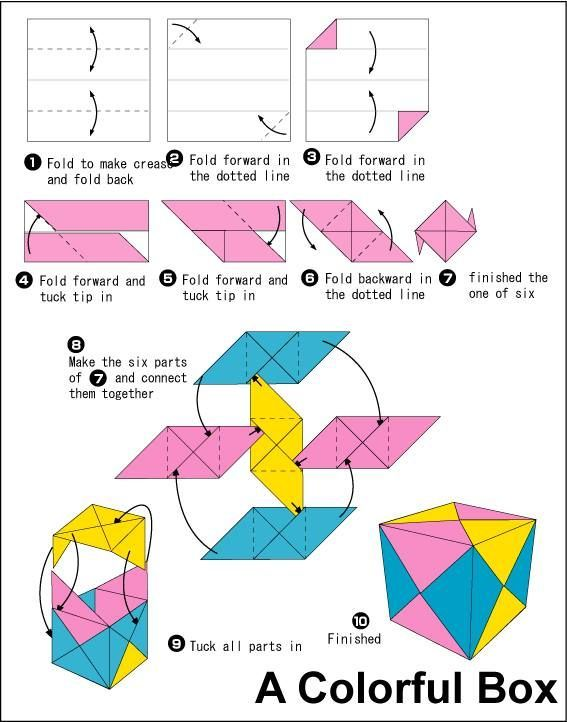
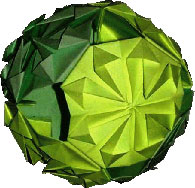
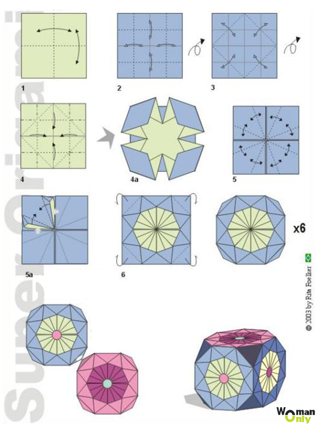
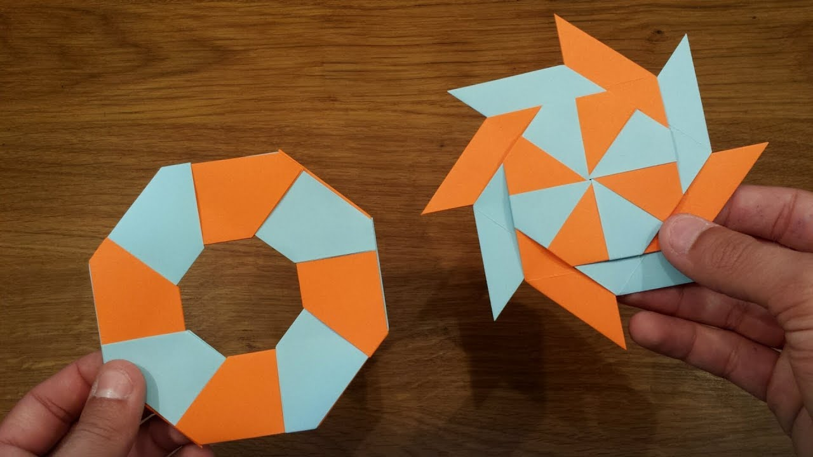
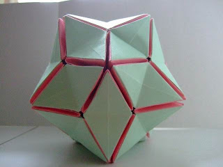
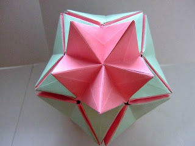
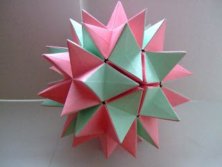

Орігамі історія появи. У перекладі з японської «орігамі» означає «складена папір», у країні висхідного сонця мистецтво орігамі називають мистецтвом цілого листа. Це одне з найголовніших правил орігамі - не додавати і не віднімати нічого зайвого. Це закон,
якого дотримуються вже багато століть всі художники орігамі. Завдяки цьому даний вид мистецтва вже тисячоліття вважається самим незвичайним і оригінальним.
З'явилося орігамі майже відразу після появи папери в Японії. Саме японці, а не першовідкривачі нового писального матеріалу - китайці, здогадалися використовувати папір як сировини для декоративних прикрас і виробів. Спочатку новий
вишуканий і цінний матеріал використовували у проведенні різних релігійних церемоній. Масовість мистецтва орігамі придбало лише у дванадцятому-тринадцяте століттях. Коли папір поширилася по всьому світу, коли ціни на неї значно впали і
зробили цей матеріал доступними. Потроху фігурки з паперу покинули межі храмів і монастирські стіни і стали відігравати значну роль у побуті мирських людей. Після деякі майстри навчилися писати і ховати у фігурках послання, які міг прочитати,
не порвавши, тільки людина, присвячений у таємницю орігамі. Такі послання часто брали красиві форми птахів, метеликів, квітів або простих абстрактних геометричних фігур.
Але найчастіше використовувалася форма журавля, який спрадавна в Японії вважався символом довголіття та щастя. Така фігурка називалася цуру. З тих далеких часів і донині журавлики є для орігамісти дуже важливим і світлим знаком. А
не так давно журавлик придбав і нове значення. Він став символом позбавлення від атомної загрози і променевої хвороби. Японія по праву заслужила звання країни - прародительки орігамі. Саме тут була створена орігамная «абетка». Японія є
законодавицею всіх класичних принципів орігамі, саме тут знаходиться класична школа цього мистецтва. Саме японські фундаментальні фігурки використовуються до цих пір. Згодом з'явилися найрізноманітніші школи та напрямки орігамі. Але всі
вони беруть свої витоки саме в Японії.
Кусудама (яп., Букв. «Лікарський кулю») - паперова модель, яка зазвичай (але не завжди) формується сшиванием разом решт безлічі однакових пірамідальних модулів (зазвичай це стилізовані квіти, складені з квадратного аркушу паперу),
так що виходить тіло кулястої форми . Як варіант, окремі компоненти можуть бути склеєні разом (наприклад, кусудама на нижньому фото повністю склеєна, а не зшита). Іноді, як прикраса, знизу прикріплюється пензлик. У стародавній Японії кусудами
використовувалися для цілющих зборів і пахощів. Кусудами - це особливий клас моделей орігамі, які відрізняються своєю власною атмосферою і технікою складання. Кусудама відрізняється чіткими лінімі і грамотними пропорціями. Крім того, її
збірка не займе у вас багато часу
Багатомодульне орігамі легко перептутаьти з кусудамою, бо і тут і там робиться багато одинакових частин-модулів. Але відмінність велика, а саме у складанні: форма кусудами маж накадувати форму правильного багатокутника.
Дуже цікавий розділ для тих хто дюбить правильні форми і чітку структуру.
 Присвячується любителям флори.
 Розділ напевно самий цікавий з усіх, ви робите моделі, що міняють форму.
   